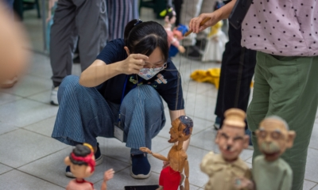
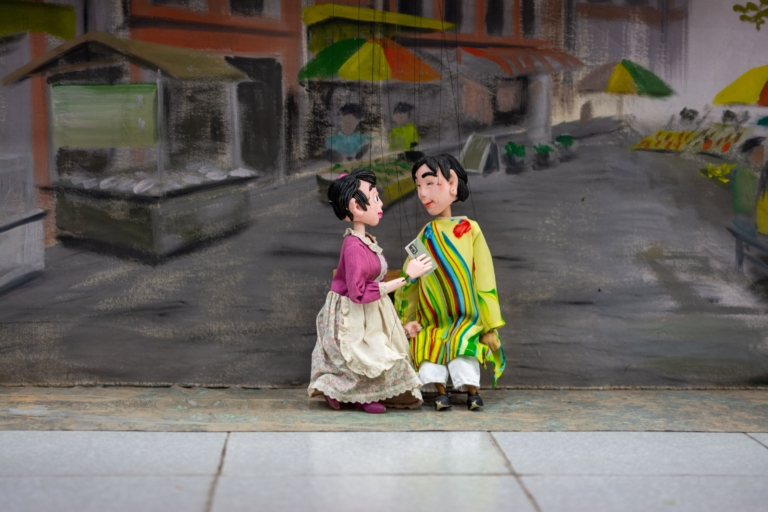

我是嘉義縣新港人，是靠近六腳鄉的一個農村，從小幫農，所以對於一些農事我們自己也非常的熟悉。
因為鄉下地方比較沒有發展，所以華商畢業、退伍以後，大概在民國七十三年的時候我就到台北去工作， 那時候就找了份會計相關的工作，在台北待了大概五、六年，後來我就慢慢的往工程這方面去學習， 因為我自己本身也蠻喜歡做工程，之後到高雄工作大概十幾年，因為父母親年紀也大了， 所以就回來鄉下，一邊照顧家裡，然後一邊從事水電這方面的工程。
以前在鄉下，一些廟會都會有布袋戲來表演，那是我最初對於偶劇的印象。 但是對於懸絲偶，我可能有聽過，但是並沒有很深的認識。
後來因緣際會之下，透過莊淑瓊教授接觸到了笑瞇瞇偶劇團， 因為感覺到有趣，所以就慢慢地參與，先是在嘉義大學台文中心有擔任助理的工作， 從三月份到現在，大概八個月。
笑瞇瞇本身是一個劇團，所以你必須去塑造一個有趣的劇情， 而一個劇情的設計到演出需要很多的人的參與以及合作， 才能夠有一個很好的一個戲劇演出。 因為它不像技巧上的操作，只要多練習就能夠熟能生巧， 一個劇情的創作，可能需要的是更多的時間跟精神在裡面， 才能夠有一個比較好的劇本呈現，所以我認為它是一個有趣的挑戰。

現在笑瞇瞇成立的這種型態，它是屬於比較隨性、本土、輕鬆的一種觀賞戲劇的方式， 這個戲劇就是闡述說，我們演這個戲劇希望能夠帶來的是什麼東西， 就是給大家在一個輕鬆、愉快的看戲心情，讓大家能夠會心一笑， 然後也能夠有一些體會，這個體會是比較沒有禁忌、沒有壓力的， 所以我們的名字叫作笑瞇瞇，就是希望大家能夠快樂。